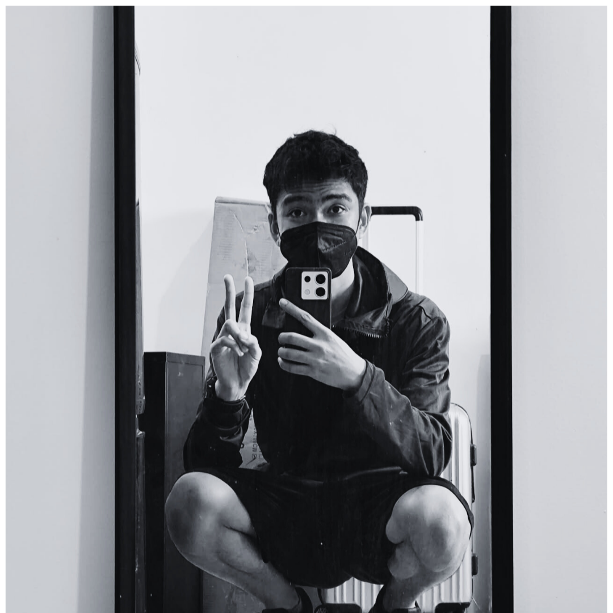
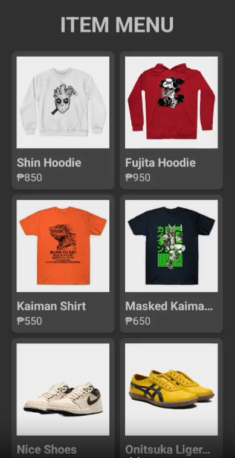
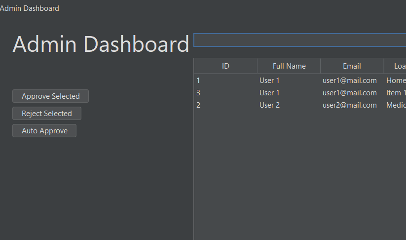
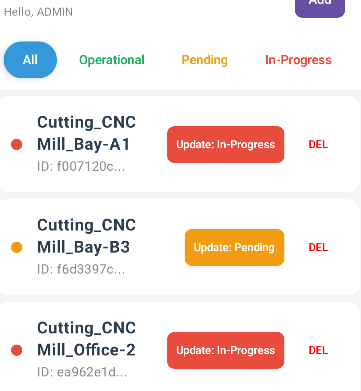

Hey there! I'm a passionate sophomore college student diving deep into the world of programming and technology. I love building things that solve real problems and learning new technologies along the way. My journey in computer science has been an exciting adventure, and I'm eager to see where it takes me!
When I'm not coding, you can find me exploring new tech trends, working on personal projects that challenge me to grow as a developer, or looking for projects to contribute to on GitHub. I'm always open to connecting with fellow tech enthusiasts, so feel free to reach out!
Download Resume

Built a desktop loan approval system using Java Swing in NetBeans, with MySQL managed through PHPMyAdmin. Developed user and admin dashboards with login/logout and full CRUD operations, and implemented a priority-based algorithm to efficiently track and approve loan requests.

Built an Android app for tracking machine maintenance using Kotlin and Room for local data storage. Designed intuitive UI/UX for logging and monitoring maintenance schedules, and implemented core app logic for efficient record management.
Feel free to reach out! I'm always open to discussing new projects, opportunities, or just chatting about tech.